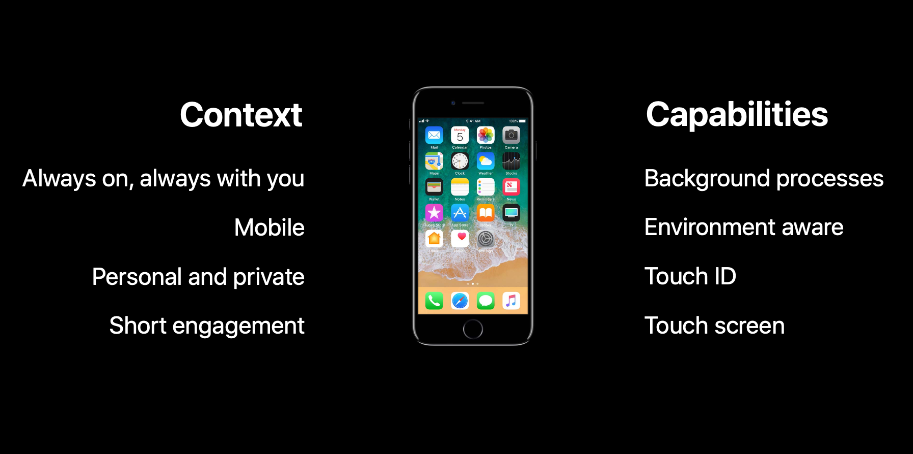
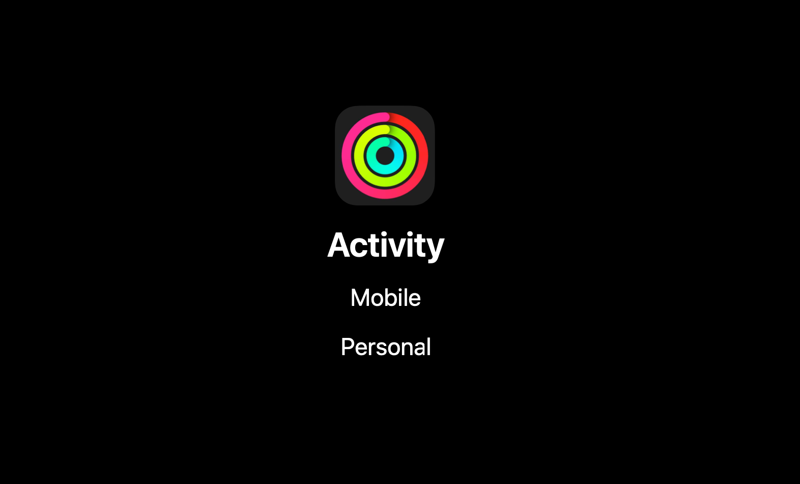
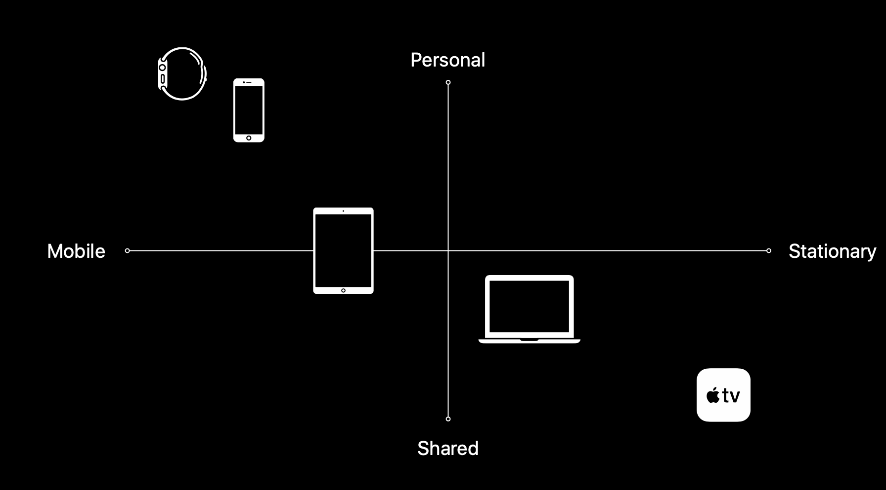
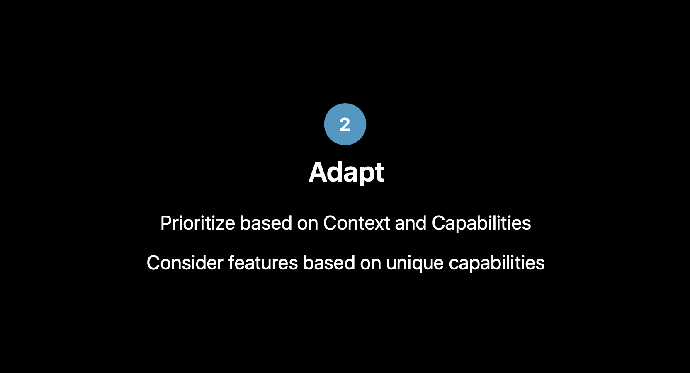
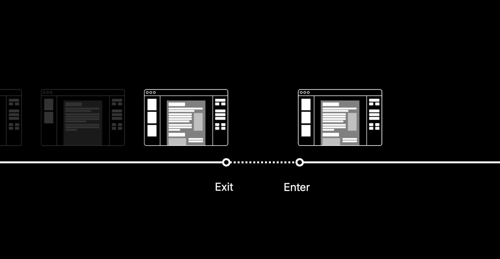
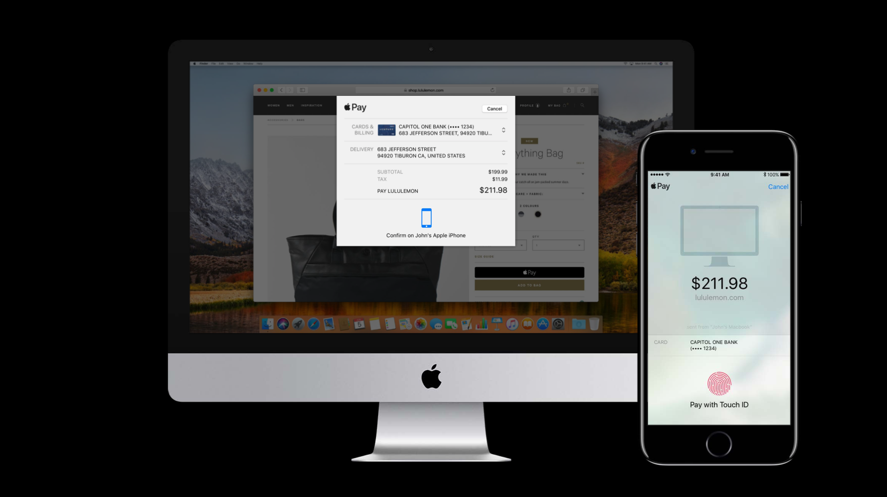
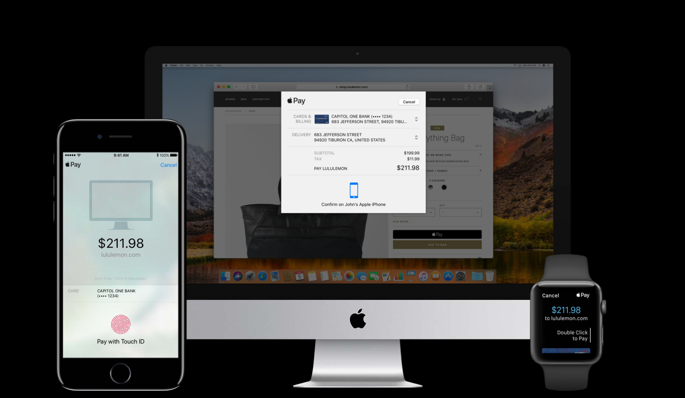

Apple 创造了很多平台，对于每一个创造的平台，对于每次更新一个平台的时候，我们的目标都是改善你的每日生活，希望在平台和你之间创造一个有意义的关系。这个关系不仅仅只在一个平台上出现，你使用的 Apple 产品越多，你就越不会只依赖一个平台，而是依赖整个生态系统。
你可能通过在 Apple Watch 上点击开始跑步以开始你的一天。在工作时，你可能会使用 MacBook 或者 iMac。当你要回家时，你可能在你的 iPhone 上寻找公共交通信息或者在车上使用 CarPlay。当你回到家，你可能想放松一下在 Apple TV 上看一个电视剧或电影，在一天的结束，你可能在你的 iPad 上读一会儿书。不管你使用的是什么设备，你都可以依靠苹果生态系统去识别你、理解你、帮助你。创造并为这个生态系统做贡献要求对每一个平台都有很深的理解。
作为一个在 Apple 的设计师，那是一个非常熟悉的挑战。对于每一个 Apple 创造的 app，我们仔细考虑它应该生存于哪个平台，在不同平台之间是怎样的。如果你仔细看看 Apple 创建的 app，你可能会意识到有一些 app 在所有的平台上都存在，如「照片」、「音乐」，而另一些 app 只存在于某些平台，如「备忘录」、「邮件」。如果你能有多个设备，一些我们的服务（如 Apple Pay）会工作得很好。其他的像是「FaceTime」你得同时有多个设备才能工作。
这篇文章谈论的就是为了帮助你在跨平台之间设计，我们在 Apple 使用的方法。目标是更有效率，更有目的，把你的 app 带到更多的平台上去。
第一部分是「选择」，会讲一讲每个平台的能力和使用情景，基于这些信息作出设计决定。第二部分是「适配」，会看一看我们想带到平台上的亮点和功能以及去管理它们。第三部分是「遵从」，尝试在我们自己的品牌和平台设计规范之间找到一个平衡，确定 app 长什么样子并去感受它。第四部分是「连接」，会看一看当你从一个平台到另一个平台上会发生什么，它是怎样让体验无缝衔接、轻松愉悦的。最后一部分是「延伸」，看一看多个平台都可用时会发生什么。
希望在文章结束之时，你能获得你在 Apple 生态系统下打造令人惊异的 app 所需要的所有需要的信息和知识。
目录
选择 Select
当谈到选择的时候，我们很想回答这个问题：我该选择哪个平台？也许你的 app 还没有诞生，你想要决定首先在哪个平台上创造它；或许你已经在一两个平台上发布了你的 app，你尝试选择下一个平台。
当我们选择平台时，「使用场景」和「能力」非常重要。使用场景有关于你的 app 的使用时间、地点、环境。能力是平台之间得以区分的独一无二的功能。
因为人们切换使用场景时会经常切换使用平台，所以「使用场景」很重要。例如你从一个专注固定的场景中到了一个公共汽车或者火车上，这就变成了一个非常动态、移动的场景，这是一个很大的变化，也解释了为什么人们会从 Macbook/iMac 切换成了 iPhone/Apple Watch，因为电话和手表更优化于移动的场景。
理解「能力」同样重要，因为它让你看到是什么让一个平台独一无二、你的 app 如何从这些能力中受益。
举几个例子，从最熟悉的平台 iPhone 开始。如果你思考 iPhone 的使用场景，它总是开启的，总是在你身边，因此它是移动的，它是非常个人和隐私的设备。你不会很容易与其他人分享它，它针对短时间使用进行了优化。当你使用 iPhone 时，你可能只会用几分钟。
能力支持了这个场景。iPhone 具备陀螺仪、加速器，即使你没有在使用 iPhone，你也可以在后台访问到这些配置的信息。因为你的 iPhone 是个人和隐私的，它通过 Touch ID 和 Face ID 保护。为了让短时间的使用更加容易、有趣，会有一块详细的触摸屏。

Apple Watch 有些相似，也是始终开启、始终在你身边，也是个人和隐私的，但是它更加瞬时，为更短的使用时间所优化。例如，通过撇一眼，你就能在表盘上看到想要的信息，通知只在你看足够长的时候才给你展示更多信息。
来看下手表的能力。因为手表是个人的，所以它可以跟踪你的移动、你的心跳甚至你的位置。触感可以在你该看手表的时候告诉你，表盘可以根据你想看到的信息自定义。
再来看下 iPad，iPad 有非常混合的使用场景。你可以在家里使用，也可以在路上使用。你可以在上面做非常精确专注的工作，也可以用它作为一个放松设备，用它看电影、看电视剧、玩游戏。所有的这些比 iPhone、Apple Watch 的使用时间更长。
更大的屏幕支持了这些使用场景。光线感应器让你可以在晚上和白天都使用 iPad，高保真扬声器让你可以沉浸于电影和游戏，iPad 同样配备和 iPhone 一样的触摸屏。如果你给 iPad 配备了 Apple Pencil，交互就会更加精确。
再来看下 MacBook，MacBook 的使用场景一般都是在比较专业的环境中。你可以在 MacBook 上做很精确、很复杂的工作，比如设计 app、开发 app。它也可以被用作为一台共享设备，但因为每个人都有一个账户，所以它仍然是个人化的。你会长时间使用 MacBook 或者 iMac。绝大多数人一天会用几个小时。
为了完成那些专业的工作，Mac 配备了很高的配置。Mac 上的鼠标和键盘让你可以做精确复杂的工作，多任务让你用你的方式做你想做的，多用户让你把 Mac 变成共享设备。
最后来看下 Apple TV，Apple TV 是一个共享设备，你会与你的家人、朋友一起使用它，它是固定的，一般不会从一个地方移动到另一个地方。Apple TV 为放松的使用体验所优化，你可以在上面看电影、看电视剧、玩游戏。所有的这些活动都是长时间的使用，30 分钟或者更长。
Apple TV 可以与一台高清显示器/电视完美工作，让内容栩栩如生。遥控器很轻，使用很简单，你可以轻松把遥控器递给朋友或家人。因为它是固定的、与家庭密切相关的，所以它可以和 HomeKit 完美匹配。它为 10 步的距离所优化，所以你可以坐在沙发上放松并享受节目。
由上面的例子，你可以看到理解每个平台的使用场景和能力对帮助你选择哪个平台很重要。场景是平台生存的地方，能力让平台第一无二。
对于 app 来说也是这样，你可能想问你自己，我的 app 可以在哪个场景生存？它需要什么能力？在 Apple，当我们选择一个 app 应该出现在哪个平台时会有一个简单的测试。我会用几个例子来说明。
首先来看「活动」app，如果你思考「活动」的特点的话，它肯定是移动的。
- 活动跟踪你整天移动的数据，为了给你提供准确的数据，它必须是开启的，时刻在你身边，因此是移动的。
- 它也得是私人的，它可以追踪数据且只是你的数据。

当你看到这两个特点时，我们要做什么就是我们把这些特点映射出来、画出来。比如移动性，我们可以把它从移动到固定画出来。如果你在这个范围看我们的平台，它将会是下图这样的。Apple Watch 是最具移动性的平台，Apple TV 是最具固定性的平台。
如果你去看私人这个特点，我们可以把它从私人到共享画出来，像下图这样。Apple Watch 是最私人的平台，Apple TV 是最共享、最固定的平台。

当我们回到「活动」app，我们说它是私人的、移动的。所以在图表中就应该落在下图所示的那里。这也解释了「活动」app 为什么只在那两个平台上存在，而在其他平台上不存在。
另一个例子来看「库乐队」这个 app。它的特点是你必须非常精确，你必须在你想要的地方和时间准确操作声音。第二点，它需要与多任务配合工作，你需要能够同时播放多个声音，需要控制连接到平台上的所有的硬件和乐器。
我们同样可以把这些特点画出来，我们可以把它从宽松的交互到精确的交互画出来，平台的情况会像下图这样。在一个配备了鼠标和键盘的 MacBook 上，你可以做到很精确，但在一个 Apple Watch 上，因为屏幕很小，人们手指很粗，你就不能很精确。
如果你看多任务这个特点，我们可以把它从多任务到单任务画出来。在 MacBook 上，你可以很容易地同时处理多个任务，而在 Apple Watch 上，你只能一次处理一个任务。
如果你要看看「库乐队」该处于何位置时，因为它必须支持多任务、必须足够精确，所以它应该位于下图所示的位置。这也解释了「库乐队」app 为什么只在那三个平台上存在，而在其他平台上不存在。
根据不同的特点，我们一遍又一遍地做这个测试，最终我们希望可以找到你的 app 可以生存的那几个平台。基于它支持的场景、提供的能力选择一个平台，它验证了你的 app 会在哪里受益最多，这就是选择。
这就是选择。
适配 Adapt
通过适配，我们去看看我们想带给 app 的所有的交互、所有的特性、所有的功能，并尝试在我们想要的几个跨平台上管理它。
用一个例子来解释，再来看下 iPhone 上的「活动」app，这个 app 中你可以做很多种功能。你可以看看一天的活动进程，你可以看看你的成就、你的锻炼，你可以看看你朋友运动情况如何。你也可以管理所有的这些数据，邀请朋友、分享成就和活动进程。所有的这些功能在 iPhone 上都是可以实现的，如果你回过头去考虑下 iPhone 的使用场景，这些功能也会工作的很好。iPhone 是一个非常私人的设备，所有的你做的这些交互都包含私人信息。iPhone 为短时间使用所优化，所有的这些交互都不会花很长时间，你可以快速完成它们。
但是如果你看一下它在 Apple Watch 上的表现，我们会看到功能设置很大程度上被削减了。如果你回过头去考虑下 Apple Watch 的使用场景，这是讲得通的。手表也是一个私人设备，所有的这些交互、信息也是私人的。但手表是为非常短的交互所设计，比如瞥一眼。所以我们确保你可以通过瞥一眼看到自己的活动进程，看到朋友们运动如何。
所以关于适配很大的一部分就是看看在你想要呈现的跨平台上是如何管理你的交互和功能的。另一部分是看看一个平台可以提供哪些独一无二的能力，你的 app 又是如何从中受益的。当我们看 Apple Watch 时，手表的独一无二的一些能力是它可以追踪移动轨迹，可以跟踪你的心率、你的位置以及所有 app 需要的信息。如果你看看我们给 Apple Watch 带来的额外功能，你可以看到「创建体能训练」、「更改活动目标」。
适配会基于平台的情景和能力优选你的功能，会考虑那些可以从平台独一无二的能力中受益的新功能。

在这方面一个很好的例子是「Photoshop」。对于在 Mac 上使用过这个 app 的人来说，都知道「Photoshop」是一个很庞大的 app，包括非常多的功能，你可以在其中做很多事情。但是当要把这个 app 带到 IPhone 上时，Adobe 做得很好，他们把 app 拆分成了三个 app。所有的交互也为短时间使用所优化，利用手机独一无二的能力，增加了像是能在 app 中立即拍照的功能。
另一个很好的例子是「New York Times」。如果你想在这个平台上读一篇文章，你可以在 iPhone 上、iPad 上或者网站上完成。但如果你看看在 Apple Watch 上他们是怎么做的，你只能看到最近一系列文章的标题，如果你对其中一个感兴趣，你可以向下推就可以看到一个对文章简短的总结，但是如果你想看整篇文章，你需要花很长时间，那 Apple Watch 不能实现。因此，它要求你到 iPhone、iPad 或者网站上查看。

这就是适配。
遵从 Conform
在第一步中，我们看了你该选什么平台，在第二步中，我们看来具体的功能，现在我们来看看 app 的外观和感觉。当人们谈到外观和感觉时，他们总是会想到一致性这个词，那是在把 app 带到多平台时非常重要的一个词。但是一致性并不意味着完全相同。在 Apple，我们不会把功能和视觉元素从一个平台复制粘贴到另一个平台。
做到一致性更多的是一件平衡的事。你必须在两种类型的一致之间平衡，一种是品牌平衡，这意味着当用户打开你的 app 时，他们应该识别出你的品牌，它应该很熟悉，这会在品牌和使用 app 的人之间构建信任。另一种是平台规范，这意味着你需要使用平台提供的标准，你的 app 才会像原生的一样。因为这些标准会出现在平台上的所有 app 中，人们会感到识别度很高。认知负担越低，学习曲线越减缓。所以在这两种类型的一致性之间找到平衡是很重要的，这可能是整个过程中最困难的一部分。
Apple 的 HIG 可能可以帮助到你，它可以帮助你理解所有的平台提供的标准和规范，也可以帮助你理解你的品牌在这些规范中该落地何方。一个例子就是你可以使用的的字形，它们都根据所在的平台最优化。这并不意味着你必须使用 SF 字体，或者你必须使用特定的字形或样式，但是它可以给你针对于不同平台哪个尺寸表现得更好的参考意见。
例如，你看一下这三个平台上的「body」样式，你会看到它们的大小根据观看距离都设置的恰到好处，在 Apple Watch 上，你看手表时会离手表很近，所以它是很小的样式；在 iPhone 上，稍微远一点，所以它会比手表上稍微大一点；而在 Apple TV 上，观看距离很远，所以它的样式很大，人们可以从很远的距离舒服地看到屏幕上的内容。
除了样式上的特性，HIG 还可以在平台提供的标准和功能上帮助你。例如，Alerts 提醒弹窗，它会出现在每个平台上，拥有的元素都差不多，一个描述、一到两个动作，会模糊掉后面显示的内容。但是，如果你仔细看描述的长度、按钮的样式、轻点的目标，它们都根据各个平台进行了优化。因此使用用户熟悉的、一眼就认得出的系统提醒弹窗会让用户易于使用。
导航也是这样。如果我想在 Apple Watch 上导航到上一个屏幕，我只需要轻点左上角的后退按钮，iPhone 也是这样。而在 Apple TV 上，屏幕上没有后退按钮，因为后退按钮是位于遥控器上的，所以没有必要在屏幕上再添加一个按钮用于导航。
这就是遵从要讲的内容，需要在你的品牌和平台规范之间找到一个平衡，向你的品牌看齐，这样你的品牌就会被认出、让人们熟悉并创造信任；向平台规范和功能看齐以降低认知负担、减缓学习曲线。
举一个第三方 app 的例子「Ulysess」。如果你在 iPhone、iPad、Mac 上使用这个 app，就会发现一系列的平台提供的标准，它们都使用了导航栏、工具栏、搜索区域、分隔视图，在这些地方，品牌呈现全都体现在写作体验中。通过允许专注聚焦、快速应用 markdown 格式，在 app 中写作变成了一份奇妙的体验。
另一个例子是「Streaks」，你通过颜色、排版、图形甚至是长按完成任务的交互就能马上辨别出它的品牌。但它们也同样遵从了平台规范，比如，智能通知、缩放字体、适配新的语言。
最后一个例子是「Tinder」，你同样会从图形、颜色以及左划右划的交互辨别出品牌。但它仍然向平台设计规范看齐。UI 大小根据不同平台进行调整，左划右划的独一无二的交互也不会妨碍平台功能。
这就是遵从。
连接 Connect
如果这是你第一次在第一个平台上发布你的 app，现在已经搞定了。你选择了你的平台，定义了 app 的功能，定义 app 的外观和感觉。现在，你可以构建它并且发布了。但是，如果你这你这是在第二个、第三个平台上发布你的 app，连接会变成非常重要的一步。
当谈到连接时，有两个点很重要，进入点和退出点。进入点是当你打开 app 你开始使用时，退出点是经过一段时间，你在 app 中完成了工作，你关闭它去做其他事时。这两点都很重要，即使你只有一个平台。
每当你再次打开 app 时，你希望不会看到同样的启动屏幕，但是这可以帮助你创造你最后一次打开 app 时相同的环境，我们称之为「再创造状态」。此处的状态是指你最后一次打开 app 时的内容、信息和设置。取决于你的 app 可以做什么，状态可以是任何形式。

例如「天气」app，再次打开时，应该显示与上次打开 app 时相同的位置和城市的天气，但天气信息已经更新了。
再比如「备忘录」app，它可以打开你上次工作的那个笔记，如果可能的话还会选中相同的工具。
对于像是电影、电视剧、游戏等的媒体型 app，你会希望它恢复上次离开时的进度。例如，在游戏中你不需要一遍遍地从头玩游戏到某个相同的点。
当你在平台间切换时，记住状态变得更加重要。在任何平台能够记住并且再创造最后使用的状态可以创造一种轻松愉悦的体验。它允许人们在任何他们喜欢的场景中享受 app，因为你作为一个 app 开发者或者设计师，你应该关注平台上的最优化体验。
在 Apple，我们努力尝试去连接平台。例如，在「TV」app 中，它记住的状态是你上次停止观看的地方，你看得哪个电视剧和在哪个时间点暂停的是可以所以设备间同步的，所以你可以在任何你选择的平台上恢复播放进度。
另一个例子是「地图」app，早上我在地图上搜索了我如何到达会议中心，因为我做过这个动作，这个搜索就会进入我的最近搜索中，最近搜索就是一个可以在所有平台重新创造的状态。所以，当我进入我的车里时，那个最近搜索就可以在列表中看到，我可以点击并前往目的地。
如果你在所有的平台上都配置好了你的 app，用起来会非常棒。但是当一个新平台加入时会发生什么？假如你在用 MacBook 或者 iPhone，有一天你买了一个 iPad，它变成了你生活的一部分。你会在 iPad 上安装 app，大多数时候，在 app 可以重建你的状态前，它需要一些信息，它需要额外的一步，那就是配置步骤。App 需要知道你是谁，所以它可以重建你曾经在另一个平台上最后一次使用 app 的状态。
通常情况下，这样一个配置步骤像下图这样，这非常让人泄气，你必须记住你的电子邮箱、用户名、密码，而且还得输入它，你还可能会输错。最后，你可能就退出了，不想再在这个平台上使用这个 app。
但是，得益于像是 iCloud 钥匙串 这样的功能，你可以让这些步骤变得轻松简单。通过点击一个按钮，iCloud 钥匙串可以填充上你的名字、电子邮件和密码，你就可以用了。
在 Apple，我们真的非常喜欢这个部分、这个配置步骤，特别是在新平台上。如果你买了一个 Apple TV，你不需要手动配置，你只需要把你的 iPhone 或者 iPad 靠近 Apple TV，它就会把所有与 Apple TV 兼容的 app 以及 iTunes 上存储的证书移过去。所以当 Apple TV 完成配置时，你会看到所有的 app 都在那里了，因为你在手机上使用过它们，你可以马上开始购买电影或游戏，因为 iTunes 证书也可以工作了。所以，这是一个很好的关于连接的例子。
连接是通过记住状态、最优化入口和出口，在平台间创建一个连续的体验。它允许通过快速简单的方式使用新的平台。
一个第三方 app 的例子是「Things」，它重新创建的状态是你的待办清单。在任何你访问过 Things 的平台，你可以添加待办项，你可以完成一个待办项，你可以给它添加截止日期、组织它，而 app 可以在所有的设备上同步这些信息。
「Deliveries」也在做相似的事情。它记住了你存储在 iCloud 中的跟踪列表，它可以通过快递服务对每个项目更新信息，这些信息你可以在任何你打开的平台上访问到。
一个无缝登录体验的好例子是「Instagram」，如果安装了 Instagram，并且已经安装了 Facebook，它会使用这些证书让你直接登录 Instagram。只需要一个轻轻的点击，Instagram 的内容就呈现在你的面前了，你就可以用了。
这就是连接。
延伸 Extend
在第五步中，我们看一看当两个平台同时可用时会发生什么。我们回到第一步选择中提到的平台的情景和能力，来看下 MacBook。MacBook 有很高的性能，你可以使用键盘和鼠标完成精确的工作，可以进行多任务，但是它不擅长的是知道你是谁。事实上，当我从睡眠中打开我的 MacBook 或者开机时，我将会看到下面这个画面。我必须输入密码或者用 Touch ID 登录，像前面提到的登录体验一样，如果需要需要手动输入密码，这让人有点泄气。我必须记住密码，如果输错了可能要输入好几次。
但是这是 MacBook 知道我们是谁的唯一方式，它没有其他方式确认我的身份。但如果你有一块 Apple Watch，因为手表总是戴着并与你相伴，它知道你是谁。所以当 MacBook 和 Apple Watch 之间可以对话时，魔法就出现了。手表可以告诉电脑那就是你，登录吧，你还没反应过来，你的电脑就已经登录并呈现在你的面前了。这里很重要的一点是这个体验有多么轻松，我没有让 MacBook 一直聆听我的 Apple Watch，我没有让 Apple Watch 向 MacBook 传递信息，仅仅是因为它们靠得近一切就发生了。事实上，我什么都不用做。
所以，当你有多个平台可用的时候，创造一种轻松的体验是非常重要的。增加一个平台不应该导致步骤的额外增加。再来看另一个平台，来看看 iMac，iMac 也有着高性能，同时还有一块大的显示屏，这有利于浏览网页甚至说是购物。但不幸的是，iMac 不能安全地存储你的 Apple Pay 卡片信息。但是 iPhone 可以做到。所以当这两者开始对话时，支付就可以瞬间完成。当你想在 iMac 上买东西时，它会告诉你到你的 iPhone 上，你的手机会使用安全存储的 Apple Pay 卡片，通过 Touch ID/Face ID 验证确认购买，一切就搞定了，付款完成，你可以继续购物了。

这也不必非得是 iPhone，iPad 和 Apple Watch 也可以做得到。这里很重要的一点是控制有多么清晰。iMac 清楚地告诉你去到 iPhone 上，在 iPhone 上，我可清晰地看到我要买的东西，通过 Touch ID/Face ID 完成确认，对于 Apple Watch 是通过双击完成确认，我还没反应过来的时候，购买已经完成了。

再来看一下「Keynote」，Keynote 是做演示的好工具。但做演讲的一个缺点就是你的 MacBook 总是与一台显示器或者投影仪相连。如果你想在幻灯片之间移动，你必须站在 MacBook 背后，因为键盘是移动幻灯片的唯一方式。但如果你有一个 iPhone，它就可以控制展示哪个幻灯片，你可以轻松地到处走动，因为手机更轻、更好拿。这里很重要的一点是它是可选的。如果我的手机没电了或者忘记了，我仍然可以回到 MacBook 旁边使用键盘移动幻灯片。所以，让其可选也是打造多设备一体化体验的重要一步。
这就是延伸所包括的内容，我们通过组合不同平台的能力补足了不同平台，我们让如何控制不同设备变得清晰，我们向着一种可选的、轻松的体验努力。
一个第三方 app 的例子是游戏「Timber Tennis」，游戏总是能很好地理解多平台是怎样创造魔法的体验的。你可以在这个游戏中，通过多设备创造多角色的游戏体验，它是很轻松的。通过一个简单的按钮点击，你可以开始多角色游戏。游戏中有清晰的控制，因为屏幕上只有两个按钮。它是完全可选的，你可以使用电视、iPhone、iPad 或者随意组合来玩。
另一个例子是「Zova」，即使你只有一个设备，Zova 也会工作的很好。如果你有 iPad 或者 iPhone 或者 Apple TV，你可以通过 Zova 开始训练，但你也可以通过多设备配合得到更好的体验。例如你有一块 Apple Watch，它会测量你的心跳，这个信息会在所有你使用的设备上共享，比如出现在电视上。它是令人轻松的，还是那样，你不需要做任何事情去让这些信息在设备间共享。我也不需要让手表去电视上展示心跳。它是完全可选的，Zova 在一个平台上和在多个平台上都工作的很好。
这就是延伸。
总结
这就是整个过程，我们基于每个平台的情景和能力选择我们的平台，我们通过优选新的和已存在的功能、利用独一无二的平台能力去适配。通过遵从，我们尝试着在品牌和平台设计规范间找到一个平衡。在连接中，我们看了当你从一个平台到另一个平台时会发生什么，让体验真正无缝轻松。最后，通过延伸了，我们看了当多个设备同时可用时，什么魔法事情会发生。
我们设计我们的平台和我们的 app 以让你的每天生活受益，并创造一种有意义的关系。我们希望所有的 app 和平台创造一种比单独自己更棒的整体体验
参考链接
如果你觉得这篇文章对你有所帮助，欢迎请我喝杯咖啡，感谢你的支持😁